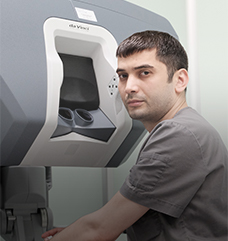

- Направления
-
Как происходит
вмешательство - Преимущества
- Отзывы
- Специалисты
- Как получить услугу
- Вопрос-ответ
-
Адрес: г. Санкт-Петербург,
пр.Литейный. д.56 - Телефон: 8 812 605 03 03
- Платный отдел: 8 812 812 828 82
Польза для пациентов
Минимальная травматичность операции
Минимальная кровопотеря
Раннее и полное восстановление функции оперированных органов
Ранняя реабелитация
Сопоставимые или
лучшие онкологические результаты лечения
Лучшее качество жизни пациентов в период после операции
Заболевания
Операции на Da Vinci
Робот Da Vinci
Робот da Vinci – эндовидеохирургический комплекс, состоящий из консоли, манипулятора
с инструментами и стойки с оборудованием.
Лучшие результаты лечения по сравнению
с традиционной лапароскопической и открытой хирургией.
Хирург управляет инструментамидистанционно через джойстики, расположенные на консоли робота.
3D-изображение и 10-кратноеувеличение на экране хирурга
7 степеней свободывращения инструментов, что превышает возможности человеческой кисти
Гашение естественного дрожаниярук позволяют выполнять вмешательства наиболее прецизионно
Роботические хирурги
Городской Мариинской больницы
Городской Мариинской больницы
Наши специалисты выполняют вмешательства на роботе da Vinci с 2009 года, являются пионерами целого ряда роботических вмешательств в Санкт-Петербурге и России
Семёнов Дмитрий Юрьевич
д.м.н., проф., директор МОНИКИ (Москва), официальный эксперт и проктор da Vinci по хирургии в России
Османов Зейнур Худдусович
хирург, к.м.н., доцент
Гулиев Бахман Гидаятович
уролог, д.м.н., проф.
Ильин Дмитрий Михайлович
уролог
Шепичев Евгений Викторвич
торакальный хирург
Тононян Андраник Гегамович
хирург, к.м.н.

Хаиров Алим Мусаевич
хирург
Как попасть на операцию
* Для жителей Санкт-Петербурга
1
Пройдите обследование
Для консультации нужно иметь результаты предварительного обследования, подтверждающие или позволяющие заподозрить наличие заболевания: УЗИ, компьютерная томография, магнитно-резонансная томография, данные лабораторных исследований, гистологическое заключение.
2
Запишитесь на консультацию
Отборочная комиссия для операций на роботе da Vinci проводится на базе амбулаторно-консультативного отделения Городской Мариинской больницы (Санкт-Петербург, ул. Жуковского, д.1, м. Маяковская).
Дополнительное обследование можно пройти
на базе Мариинской больницы в рамках ОМС и платно.
3
Получите квоту
По результатам обследования и на основании заключения отборочной комиссии жителям Санкт-Петербурга может быть оформлена федеральная квота на выполнение высокотехнологичного робот-ассистированного хирургического вмешательства.
Для этого пациент должен предоставить паспорт, медицинский полис, СНИЛС и заполнить заявление. Оформление федеральной квоты производится специалистами Мариинской больницы.
4
Пройдите лечение
Операция выполняется на хирургическом роботе da Vinci Si. На время лечения работающим людям оформляется больничный лист.
5
Наблюдайтесь
Если операция выполнялась по поводу злокачественного новообразования, после выписки пациенты могут наблюдаться у онколога Мариинской больницы.
12
Пройдите обследование
Для консультации нужно иметь результаты предварительного обследования, подтверждающие или позволяющие заподозрить наличие заболевания: УЗИ, компьютерная томография, магнитно-резонансная томография, данные лабораторных исследований, гистологическое заключение.
2
Запишитесь на консультацию
Отборочная комиссия для операций на роботе da Vinci проводится на базе амбулаторно-консультативного отделения Городской Мариинской больницы (Санкт-Петербург, ул. Жуковского, д.1, м. Маяковская).
Дополнительное обследование можно пройти
на базе Мариинской больницы в рамках ОМС и платно.
3
Получите квоту
По результатам обследования и на основании заключения отборочной комиссии жителям Санкт-Петербурга может быть оформлена федеральная квота на выполнение высокотехнологичного робот-ассистированного хирургического вмешательства.
Для этого пациент должен предоставить паспорт, медицинский полис, СНИЛС и заполнить заявление. Оформление федеральной квоты производится специалистами Мариинской больницы.
4
Пройдите лечение
Операция выполняется на хирургическом роботе da Vinci Si. На время лечения работающим людям оформляется больничный лист.
5
Наблюдайтесь
Если операция выполнялась по поводу злокачественного новообразования, после выписки пациенты могут наблюдаться у онколога Мариинской больницы.
Часто задаваемые вопросы
Что такое робот Da Vinci?
Хирургическая система da Vinci представляет собой сложную роботическую платформу, предназначенную для расширения возможностей хирурга пациента и консоли технического зрения.
Каковы основные отличия платформы ?
Хирургическая система da Vinci представляет собой сложную роботическую платформу, предназначенную для расширения возможностей хирурга пациента и консоли технического зрения.
Как устроены инстументы?
Хирургическая система da Vinci представляет собой сложную роботическую платформу, предназначенную для расширения возможностей хирурга пациента и консоли технического зрения.
Что такое робот Da Vinci?
Хирургическая система da Vinci представляет собой сложную роботическую платформу, предназначенную для расширения возможностей хирурга пациента и консоли технического зрения.
Каковы основные отличия платформы ?
Хирургическая система da Vinci представляет собой сложную роботическую платформу, предназначенную для расширения возможностей хирурга пациента и консоли технического зрения.
Как устроены инстументы?
Хирургическая система da Vinci представляет собой сложную роботическую платформу, предназначенную для расширения возможностей хирурга пациента и консоли технического зрения.
Консультирующие хирурги
-
УрологДмитрий Михайлович Ильин
-
Торакальный хирургЕвгений Викторович Шепичев
-
Абдоминальные хирургиЗейнур Худдусович ОсмановЗейнур Худдусович Османов
Консультации предоставляются бесплатно только при наличии направления из городской поликлиники.
В остальных случаях консультация платная. Предложение не является публичной офертой.
Хирургическое лечение возможно только при наличии показаний. Имеются противопоказания.